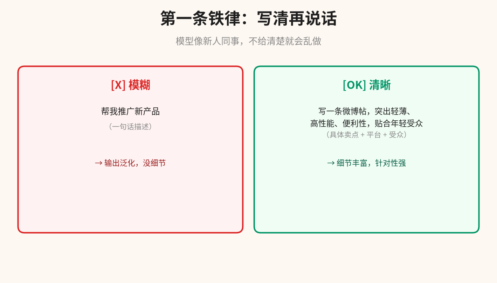
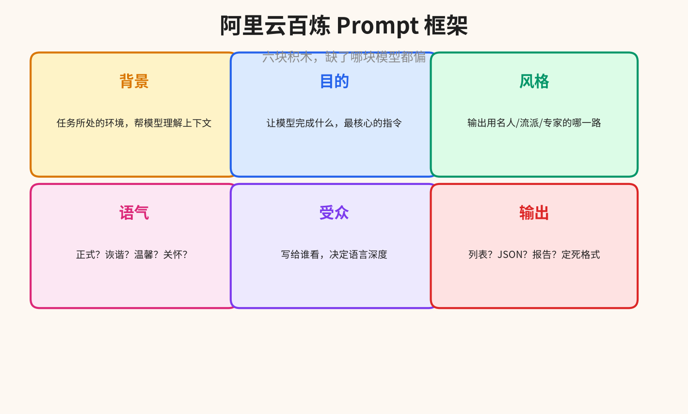
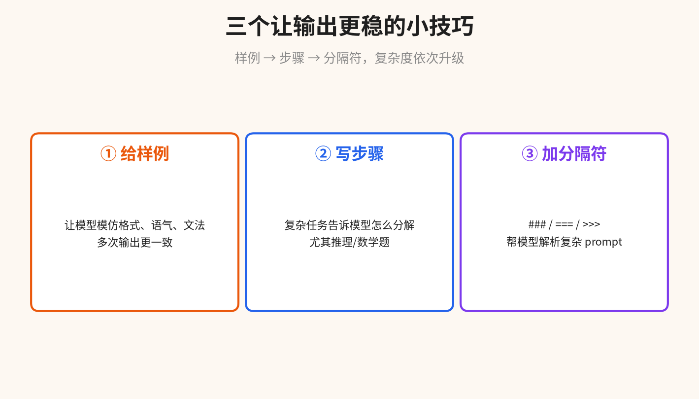
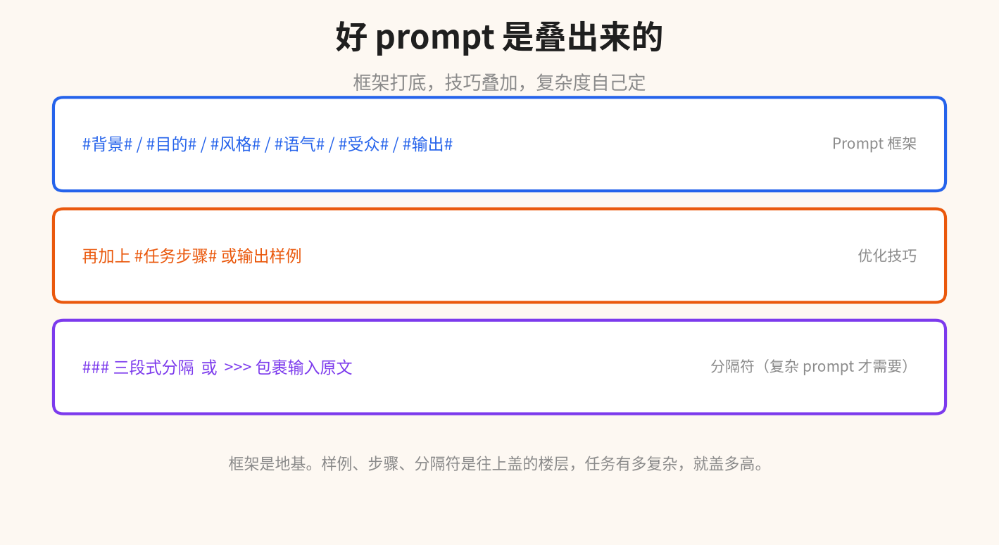

阿里云百炼最近把文生文 Prompt 指南更到了 2026-10-10。整篇不长，但结构很清楚：先讲怎么写，再讲怎么优化。
和市面上很多 prompt 教程不一样，这篇没有堆术语，而是给了一整套可复制的框架和三个直接能用的小技巧。我提炼完，这篇就是个速查版。
01
第一条铁律：写清再说话
模型像一个新人同事。你只给它「帮我推广一下新产品」，它能做的就是把这句话重说一遍。
但如果你说清楚：公司叫什么、产品叫什么、想发在哪、突出哪些卖点、希望什么样的风格——它就不会跑偏。

模糊的 → 模型泛化；清晰的 → 输出有针对性。
指南里把这条放在最前面是有道理的。**Prompt 写得清晰具体，是发挥大模型能力的第一步，也是最重要的一步。** 后面的框架、技巧都是在这一步之上做优化。
02
Prompt 框架：六块积木
只说「写清」等于没说。阿里云给了一个现成的框架，六个块，按需增减。

背景、目的、风格、语气、受众、输出，六块积木。
六个块分别是：
背景：任务所处的环境。模型理解了上下文，输出才相关。
目的：让模型完成什么，最核心的指令。
风格：输出用名人、流派、专家的哪一路风格。
语气：正式？诙谐？温馨？关怀？不同场景选不同语气。
受众：写给谁看，决定语言深度。写给五岁小孩和写给专家，输出天差地别。
输出：列表？JSON？报告？定死格式，后续才能直接用。
用起来是这样的：
#背景# 为阿里云百炼的 Zephyr Z9 轻薄手机做推广 #目的# 写一条微博帖，500字内，引导点击购买 #风格# 科技公司新品发布的广告写作风格 #语气# 有说服力 #受众# 微博上关注数码产品的年轻用户 #输出# 微博帖子格式
相比「帮我写一条微博推广」，这套框架让模型想到了更多你没说出口但应该考虑的事——特别是风格、语气和受众这三块，通常是普通 prompt 里漏掉的。
框架不是硬性规定。任务简单时删掉几块也没事。任务复杂时还可以往里加。
03
三个优化小技巧
框架是地基。往上盖还有三件事能让输出更稳。

样例、步骤、分隔符，复杂度依次升级。
给模型输出样例。告诉它你想要的格式、语气、文法，它会模仿。这个技巧最大的好处不是第一次输出更像样，而是**多次输出会更一致**。电商写种草笔记，把你喜欢的四五个「万能公式」贴进去，模型输出的稳定度会提升一大截。
给模型写完成步骤。复杂任务——尤其是数学题、推理题、多步骤分析——如果只给问题，模型容易跳步或直接蒙一个答案。把步骤写清楚「先算 A、再算 B、最后算 C」，它会老老实实一步一步来，出错率低很多。
用分隔符区分单元。复杂 prompt 里把不同部分用 `###`、`===`、`>>>` 隔开。这些符号在自然语言里不常见，模型一眼就知道「这是分隔符，不是内容本身」。prompt 越复杂，这条越重要。
三个技巧可以叠加。给样例 + 写步骤 + 加分隔符，一个数学题 prompt 能从「模型瞎蒙」变成「按步骤算出正确答案」。

框架打底，技巧叠加，复杂度自己定。
04
一个完整示例
把框架和三个技巧叠起来，写成一个能直接复制的 prompt：
### 背景 你是一名前端资深工程师。用户给了你一个需求，需要你用 React 实现。需求描述如下： >>> 用户描述 一个任务管理应用，支持增删改查、拖拽排序、分组标签。 >>> ### 目的 用 React + TypeScript 给出一个最小可运行实现 ### 风格 业界主流开源项目的代码风格，可读性优先 ### 步骤 1. 列出核心数据结构（TypeScript 类型定义） 2. 写出核心 Hook（useTasks） 3. 写出主要组件（TaskList / TaskItem / TaskForm） 4. 说明状态管理方案和取舍 ### 输出 分四个小节输出，每节配代码块。代码片段要可复制运行。
框架打底、`###` 和 `>>>` 做分隔、`步骤` 告诉模型怎么分解任务。比只说「帮我写个 React 任务管理应用」效果好很多。
05
总结
阿里云百炼这篇文生文 Prompt 指南，核心内容可以收进一张便签：
1. 写 prompt 像给新人派活：越具体越不容易跑偏。
2. Prompt 框架六块：背景 / 目的 / 风格 / 语气 / 受众 / 输出。任务简单时可减。
3. 三个优化技巧：给样例稳一致性、写步骤降出错率、加分隔符帮模型解析。
4. 框架是地基，技巧是往上盖的楼层——任务有多复杂，就盖多高。
5. 阿里云百炼还提供了 Prompt 一键优化工具，在控制台 Prompt 页面点「自动优化」就能自动扩写。
Prompt 不是许愿，是指派任务。写清楚背景、目的、给谁看、输出长什么样，模型就不会瞎做。
原文参考：help.aliyun.com/zh/model-studio/prompt-engineering-guide